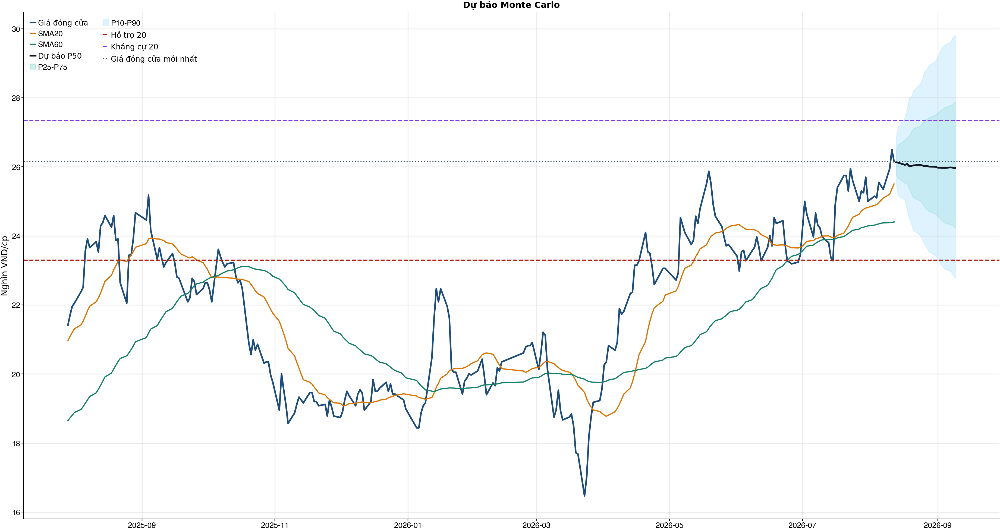

Kết quả chính
Tổng quan cơ bản
Biểu đồ kỹ thuật

Tín hiệu kỹ thuật
| Xu hướng | Tích cực | Giá nằm trên SMA20 và SMA60. |
| MACD | Tích cực | MACD trên signal, histogram dương. |
| RSI14 | Tích cực | RSI 59.9. |
| Bollinger | Ổn định | Giá nằm trong dải Bollinger. |
| ADX | Đi ngang | ADX 15.4. |
| Thanh khoản | Thấp | 0.59 lần trung bình. |
| Stochastic | Yếu lại | %K nằm dưới %D. |
So sánh mô hình
| XGBoost | 0.518 | AUC 0.558 |
| Logistic | 0.519 | AUC 0.563 |
| Đa số | 0.500 | Mốc so sánh |
Kiểm thử chiến lược ngoài mẫu sau chi phí
| Lợi nhuận ròng | -12.6% | 702 quan sát ngoài mẫu |
| Sharpe | -0.34 | Sau chi phí |
| Mức sụt giảm tối đa | -20.4% | 61 vòng giao dịch |
| Chi phí giả định | 50.0 bps | Một vòng mua và bán |
Breakdown trước phí / sau phí
| Kịch bản trước chi phí | +18.3% | Gross PnL 18,289,135 VND; chưa trừ commission/slippage/tax. |
| Chi phí giao dịch | -30.3% | 61 vòng; entry 20.0 bps + exit 30.0 bps = 50.0 bps/vòng; tổng phí 28,355,115 VND. |
| Kịch bản sau chi phí | -12.6% | Net PnL -12,580,115 VND; gross - cost gap khoảng +30.9%. |
| Ngưỡng phí hòa vốn | 30.2 bps/vòng | Phí hiện tại 50.0 bps/vòng; cao hơn ngưỡng này thì gross dương vẫn có thể thành net âm. |
| Kết luận hành động | CHƯA CÓ LỢI THẾ (NO_EDGE) | Không mở vị thế mới; nếu đang giữ thì ưu tiên giảm/bán theo kỷ luật vì sau phí vẫn âm. |
| Cách cải thiện cần test | Giảm turnover | Hiện có 61 phiên active/61 vòng; nên test threshold 0.58/0.60/0.62 hoặc giữ nhiều phiên hơn. |
Mức độ quan trọng của đặc trưng
| volatility_20d | 13.74 | Mức đóng góp |
| macd_pct | 12.47 | Mức đóng góp |
| return_1d | 11.38 | Mức đóng góp |
| corr_60d | 11.30 | Mức đóng góp |
| market_return_1d | 10.80 | Mức đóng góp |
| return_20d | 10.52 | Mức đóng góp |
| macd_hist_pct | 10.40 | Mức đóng góp |
| month_of_year | 10.39 | Mức đóng góp |
Điều kiện phát hành tín hiệu
| AUC của mô hình | ĐẠT | Điều kiện phát hành tín hiệu |
| Độ chính xác cân bằng của mô hình | KHÔNG ĐẠT | Điều kiện phát hành tín hiệu |
| XGBoost vượt mô hình Logistic đối chứng | KHÔNG ĐẠT | Điều kiện phát hành tín hiệu |
| Xác suất tăng đạt ngưỡng | KHÔNG ĐẠT | Điều kiện phát hành tín hiệu |
| Bối cảnh kỹ thuật đạt ngưỡng | ĐẠT | Điều kiện phát hành tín hiệu |
| Tỷ lệ lợi nhuận/rủi ro đạt ngưỡng | ĐẠT | Điều kiện phát hành tín hiệu |
| Dữ liệu còn mới | ĐẠT | Điều kiện phát hành tín hiệu |
| Có khối lượng vị thế hợp lệ | ĐẠT | Điều kiện phát hành tín hiệu |
| Có kết quả kiểm thử chiến lược ngoài mẫu | ĐẠT | Điều kiện phát hành tín hiệu |
| Mẫu kiểm thử chiến lược đủ lớn | ĐẠT | Điều kiện phát hành tín hiệu |
| Kiểm thử chiến lược có lợi thế ròng | KHÔNG ĐẠT | Điều kiện phát hành tín hiệu |
Quản trị rủi ro
| Rủi ro/lệnh | 1.0% | 1,000,000 VND |
| Mức dừng lỗ | 24.88 | Rủi ro mỗi cổ phiếu 1.40 |
| Mục tiêu 1 | 29.82 | Lợi nhuận/rủi ro 2.52 |
| Mục tiêu 2 | 29.82 | Dự báo/kháng cự |
Phân tích cơ bản
| P/E | 20.17 | 2026-Q2 |
| P/B | 2.06 | 2026-Q2 |
| P/S | 6.21 | 2026-Q2 |
| ROE | 9.8% | 2026-Q2 |
| ROA | 3.1% | 2026-Q2 |
| Gross margin | 38.0% | 2026-Q2 |
| Net margin | 23.0% | 2026-Q2 |
| Debt/Equity | 1.82 | 2026-Q2 |
| Current ratio | 1.54 | 2026-Q2 |
| NPL | 0.0% | 2026-Q2 |
| Dividend yield | 0.0% | 2026-Q2 |
| Market cap | 35,773.6 tỷ | 2026-Q2 |
| Revenue Growth | 15.1% | 2026-Q2 YoY |
| Profit Growth | 42.0% | 2026-Q2 YoY |
| Dòng tiền từ HĐKD | 317.7 tỷ | 2026-Q2 |
| CAPEX | -2.3 tỷ | 2026-Q2 |
| Lợi nhuận sau thuế | 273.2 tỷ | 2026-Q2 |
| Lợi nhuận hoạt động | 340.5 tỷ | 2026-Q2 |
| Tiền và tương đương tiền | 2,202.4 tỷ | 2026-Q2 |
| Vay ngắn hạn | 26,093.2 tỷ | 2026-Q2 |
| Vay dài hạn | 0.0 tỷ | 2026-Q2 |
| Tổng tài sản | 41,258.9 tỷ | 2026-Q2 |
| Tổng nợ phải trả | 26,619.1 tỷ | 2026-Q2 |
| Vốn chủ sở hữu | 14,639.8 tỷ | 2026-Q2 |
| Khoản phải thu | 313.9 tỷ | 2026-Q2 |
| Dòng tiền tự do (CFO - CAPEX) | 315.4 tỷ | 2026-Q2 |
| CFO / Lợi nhuận sau thuế | 1.16 | 2026-Q2 |
| Nợ vay ròng | 23,890.8 tỷ | 2026-Q2 |
| Nợ vay / Vốn chủ sở hữu | 1.78 | 2026-Q2 |
| Phải thu / Tổng tài sản | 0.8% | 2026-Q2 |
Tin tức doanh nghiệp
| Trạng thái | Có dữ liệu | research_only |
| Nguồn / số bài | VCI | 50 |
| Bài đủ timestamp | 50 | Chỉ các bài này mới được phép dùng point-in-time |
| Sentiment 5 ngày | 0.00 | 3.0 bài trước cutoff |
| Phương pháp | keyword_heuristic_v1 | Research only; chưa dùng làm tín hiệu mua/bán |
Dự báo ngắn hạn
| 2026-08-13 | 26.13 | P10 25.52 / P90 26.89 |
| 2026-08-14 | 26.12 | P10 25.16 / P90 27.16 |
| 2026-08-17 | 26.06 | P10 25.05 / P90 27.41 |
| 2026-08-18 | 26.09 | P10 24.76 / P90 27.67 |
| 2026-08-19 | 26.02 | P10 24.52 / P90 28.01 |
| 2026-08-20 | 26.03 | P10 24.34 / P90 28.03 |
| 2026-08-21 | 26.04 | P10 24.15 / P90 28.22 |
| 2026-08-24 | 26.06 | P10 24.02 / P90 28.40 |
Biểu đồ dự báo

Lịch sử giá và mức sụt giảm

Báo cáo dùng để học tập và lập kịch bản, không phải khuyến nghị mua/bán.
Phân tích AI có kiểm chứng
Trạng thái quyết định: NO_EDGE
Tóm tắt: ML decision hiện giữ nguyên NO_EDGE. News Reader đã trích đoạn có nguồn của 1 bài để phân loại chủ đề (co_tuc_va_hanh_dong_doanh_nghiep: 1), nhưng các trích đoạn này không tạo bằng chứng mới cho quyết định đầu tư.
Kỹ thuật: Artifact kỹ thuật: bias Hồi phục / nghiêng tăng; điểm 4. Chi tiết artifact: Xu hướng: Tích cực (Giá nằm trên SMA20 và SMA60.); MACD: Tích cực (MACD trên signal, histogram dương.); RSI14: Tích cực (RSI 59.9.); Bollinger: Ổn định (Giá nằm trong dải Bollinger.); ADX: Đi ngang (ADX 15.4.); Thanh khoản: Thấp (0.59 lần trung bình.); Stochastic: Yếu lại (%K nằm dưới %D.)
Cơ bản: Artifact cơ bản: Chứng khoán HSC; kỳ 2026-Q2; P/E 20.17; P/B 2.06; ROE 9.8%; ROA 3.1%; Debt/Equity 1.82; Revenue Growth 15.1%; Profit Growth 42.0%.
Tin tức: Đã đọc trích đoạn giới hạn của 1 bài; phân nhóm rule-based: co_tuc_va_hanh_dong_doanh_nghiep: 1. Tác động cần kiểm chứng: Kiểm tra ngày GDKHQ, tỷ lệ, nguồn chi trả và nguy cơ pha loãng trước khi đánh giá tác động. Đây không phải sentiment hay dự báo tác động giá.
Live research: Live snapshot lấy lúc 2026-08-12T16:10:27.508070+00:00; News Reader đọc được 1 bài. ML có 4 lý do guard và vẫn là NO_EDGE. Không dùng tin live để train/backtest. Final report dùng fallback grounded từ artifact local.
Rủi ro cần kiểm chứng
- ML guard: Balanced accuracy 0.518 < 0.520
- ML guard: XGBoost chưa vượt logistic baseline: AUC XGBoost=0.5579594897488298, AUC logistic=0.5625782846595029
- ML guard: Probability 52.6% < 55.0%
- ML guard: Lợi thế OOS ròng không đạt: return=-0.12580115000000103, Sharpe=-0.3371169628402055
- News Reader: Kiểm tra ngày GDKHQ, tỷ lệ, nguồn chi trả và nguy cơ pha loãng trước khi đánh giá tác động.
- Chỉ lưu trích đoạn giới hạn để kiểm chứng nguồn; không lưu hay hiển thị toàn văn bài báo.
- Phân nhóm là keyword rule-based để định tuyến research, không phải sentiment hay dự báo tác động giá.
- Dữ liệu News Reader chỉ phục vụ research/report; không dùng làm feature train/backtest khi chưa có lịch sử available_at point-in-time.
- Tin live/trích đoạn cần mở URL gốc để kiểm chứng bối cảnh, số liệu và thời điểm trước khi sử dụng.
- Ollama AI chưa hoàn tất trong lệnh full: Exit:
Bằng chứng
- ML decision artifact: NO_EDGE. Balanced accuracy 0.518 < 0.520
- ML decision artifact: NO_EDGE. XGBoost chưa vượt logistic baseline: AUC XGBoost=0.5579594897488298, AUC logistic=0.5625782846595029
- ML decision artifact: NO_EDGE. Probability 52.6% < 55.0%
- ML decision artifact: NO_EDGE. Lợi thế OOS ròng không đạt: return=-0.12580115000000103, Sharpe=-0.3371169628402055
- News Reader [Vietstock]: HFIC chi hơn 300 tỷ thực hiện quyền mua cổ phiếu HCM - Vietstock | nhóm: co_tuc_va_hanh_dong_doanh_nghiep (2026-08-12T04:37:51+00:00)
Báo cáo chỉ tổng hợp artifact đã lưu để nghiên cứu; không phải khuyến nghị mua/bán. Quyết định và vị thế vẫn bị khóa theo signal_decision.json.
Tác động của tin lên model
Trạng thái: research_only · Áp vào signal chính: not_applied
Khuyến nghị hệ thống: Chỉ hiển thị như shadow/research, chưa thay signal chính.
Gate chưa đạt: min_articles_60, min_feature_rows_30, news_feature_gain_positive, auc_at_least_0_55
News feature importance
| Feature tin | Gain |
|---|---|
| news_count_lookback | 0.000 |
| news_sentiment_mean_lookback | 0.000 |
| news_positive_count_lookback | 0.000 |
| news_negative_count_lookback | 0.000 |
| news_earnings_count_lookback | 0.000 |
| news_corporate_action_count_lookback | 0.000 |
| news_legal_count_lookback | 0.000 |
| news_source_count_lookback | 0.000 |
Điều kiện bật news vào signal chính
| Gate | Kết quả |
|---|---|
| min_articles_60 | Chưa đạt |
| min_feature_rows_30 | Chưa đạt |
| news_feature_gain_positive | Chưa đạt |
| auc_at_least_0_55 | Chưa đạt |
| balanced_accuracy_at_least_0_52 | Đạt |
CSV dựng từ live snapshots chỉ phù hợp smoke test/research; cần lịch sử available_at dài hơn trước khi dùng production.
Tin web đã lấy
| Nguồn | Tiêu đề | Thời điểm | Link |
|---|---|---|---|
| Vietstock | HFIC chi hơn 300 tỷ thực hiện quyền mua cổ phiếu HCM - Vietstock | 2026-08-12T04:37:51+00:00 | Mở nguồn |
News Reader: bài đã đọc và trích đoạn
| Nguồn | Tiêu đề | Nhóm | Thời điểm | Trích đoạn đã đọc | Link |
|---|---|---|---|---|---|
| Vietstock | HFIC chi hơn 300 tỷ thực hiện quyền mua cổ phiếu HCM - Vietstock | co_tuc_va_hanh_dong_doanh_nghiep | 2026-08-12T04:37:51+00:00 | Xem trích đoạnHFIC chi hơn 300 tỷ thực hiện quyền mua cổ phiếu HCM Công ty Đầu tư tài chính Nhà nước TP.HCM ( HFIC ) vừa thông báo thực hiện quyền mua cổ phiếu trong đợt chào bán ra công chúng sắp tới của CTCP Chứng khoán TP.HCM ( HSC , HOSE : HCM ). Theo đó, HFIC đăng ký thực hiện hơn 121.6 triệu quyền mua, tương đương hơn 30.4 cổ phiếu mới theo tỷ lệ quyền 4:1. Với giá chào bán 10,000 đồng/cp, cổ đông lớn của HCM cần chi hơn 304 tỷ đồng để mua thêm cổ phiếu. Sau đợt phát hành, HFIC duy trì tỷ lệ sở hữu 11.26% tại HCM . Giao dịch dự kiến được thực hiện từ ngày 24 - 28/08. Theo phương án được HĐQT thông qua, HCM chào bán gần 270 triệu cổ phiếu cho cổ đông hiện hữu theo tỷ lệ 4:1, với giá 10,000 đồng/cp, dự kiến huy động gần 2,700 tỷ đồng. Thời gian đăng ký mua kéo dài từ ngày 29/07 - 28/08. Toàn bộ số tiền thu được dự kiến bổ sung cho hoạt động cho vay ký quỹ trong năm 2026 và 2027. Đây là một trong ba cấu phần trong kế hoạch tăng vốn đã được ĐHĐCĐ thường niên 2026 thông qua, bên cạnh phát hành cổ phiếu ESOP và chào bán riêng lẻ cho nhà đầu tư chuyên nghiệp. Nếu hoàn thành cả 3 phương án, vốn điều lệ của HCM dự kiến tăng từ 10,808 tỷ đồng lên hơn 15,800 tỷ đồng. Trên thị trường chứng khoán, mã HCM đang được giao dịch ở mức 26,550 đồng/cp (phiên sáng 12/08), tăng mạnh 60% so với đáy hồi cuối tháng 3. So với 1 năm trước, cổ phiếu tăng hơn 11%. Với giá hiện tại, HCM đang ở vùng đỉnh lịch sử mới, cao hơn so với đỉnh 25,500 đồng/cp vào cuối tháng | Mở nguồn |
Chi tiết báo cáo tài chính
Kết quả kinh doanh — 4 kỳ gần nhất
Hiển thị 35 dòng đầu; mở CSV đầy đủ.
| Khoản mục | 2026-Q2 | 2026-Q1 | 2025-Q4 | 2025-Q3 |
|---|---|---|---|---|
| DOANH THU HOẠT ĐỘNG | 1,235.4 tỷ | 1,466.4 tỷ | 1,398.2 tỷ | 1,664.9 tỷ |
| Các khoản giảm trừ doanh thu | 0.0 tỷ | 0.0 tỷ | 0.0 tỷ | 0.0 tỷ |
| Doanh thu thuần về hoạt động kinh doanh | 1,235.4 tỷ | 1,466.4 tỷ | 1,398.2 tỷ | 1,664.9 tỷ |
| CHI PHÍ HOẠT ĐỘNG | -776.0 tỷ | -976.9 tỷ | -850.1 tỷ | -973.7 tỷ |
| LỢI NHUẬN GỘP | 459.4 tỷ | 489.5 tỷ | 548.2 tỷ | 691.2 tỷ |
| CHI PHÍ QUẢN LÝ CÔNG TY CHỨNG KHOÁN | -119.1 tỷ | -127.4 tỷ | -147.2 tỷ | -141.5 tỷ |
| KẾT QUẢ HOẠT ĐỘNG | 340.5 tỷ | 363.3 tỷ | 401.5 tỷ | 549.9 tỷ |
| CHI PHÍ THUẾ THU NHẬP DOANH NGHIỆP | 340.5 tỷ | 363.4 tỷ | 401.5 tỷ | 550.0 tỷ |
| Chi phí thuế thu nhập hiện hành | -67.3 tỷ | -72.6 tỷ | -82.1 tỷ | -109.4 tỷ |
| Chi phí thuế thu nhập hoãn lại | 0.0 tỷ | 0.0 tỷ | -0.4 tỷ | 0.0 tỷ |
| LỢI NHUẬN KẾ TOÁN SAU THUẾ | 273.2 tỷ | 290.7 tỷ | 319.0 tỷ | 440.5 tỷ |
| Lợi nhuận thuần phân bổ cho lợi ích của cổ đông không kiểm soát | 0.0 tỷ | 0.0 tỷ | 0.0 tỷ | 0.0 tỷ |
| Lợi nhuận sau thuế phân bổ cho chủ sở hữu | 273.2 tỷ | 290.7 tỷ | 319.0 tỷ | 440.5 tỷ |
| Lãi cơ bản trên cổ phiếu (VND) | 0.0 tỷ | 0.0 tỷ | 0.0 tỷ | 0.0 tỷ |
| Lãi trên cổ phiếu pha loãng (VND) | 0.0 tỷ | 0.0 tỷ | 0.0 tỷ | 0.0 tỷ |
| Doanh thu nghiệp vụ môi giới chứng khoán | 196.7 tỷ | 324.3 tỷ | 285.4 tỷ | 506.7 tỷ |
| Doanh thu hoạt động đầu tư chứng khoán, góp vốn (Trước năm 2016) | 0.0 tỷ | 0.0 tỷ | 0.0 tỷ | 0.0 tỷ |
| Doanh thu nghiệp vụ bảo lãnh phát hành chứng khoán | 0.0 tỷ | 0.0 tỷ | 0.0 tỷ | 0.0 tỷ |
| Doanh thu nghiệp vụ tư vấn đầu tư chứng khoán | 0.0 tỷ | 0.0 tỷ | 0.0 tỷ | 0.0 tỷ |
| Doanh thu lưu ký chứng khoán | 4.0 tỷ | 3.9 tỷ | 3.8 tỷ | 3.7 tỷ |
| Doanh thu hoạt động ủy thác, đấu giá (Trước năm 2016) | 0.0 tỷ | 0.0 tỷ | 0.0 tỷ | 0.0 tỷ |
| Thu cho thuê sử dụng tài sản (Trước năm 2016) | 0.0 tỷ | 0.0 tỷ | 0.0 tỷ | 0.0 tỷ |
| Doanh thu khác | 9.2 tỷ | 9.6 tỷ | 18.4 tỷ | 8.9 tỷ |
| Lãi/lỗ từ công ty liên doanh, liên kết | 0.0 tỷ | 0.0 tỷ | 0.0 tỷ | 0.0 tỷ |
| Lãi từ các tài sản tài chính ghi nhận thông qua lãi/lỗ ( FVTPL) | 244.4 tỷ | 359.2 tỷ | 346.7 tỷ | 502.5 tỷ |
| Lãi bán các tài sản tài chính FVTPL | 109.6 tỷ | 267.0 tỷ | 116.6 tỷ | 282.6 tỷ |
| Chênh lệch tăng đánh giá lại các TSTC thông qua lãi/lỗ | -218.0 tỷ | 37.6 tỷ | 112.9 tỷ | -26.4 tỷ |
| Cổ tức, tiền lãi phát sinh từ tài sản tài chính FVTPL | 352.8 tỷ | 54.6 tỷ | 117.2 tỷ | 246.3 tỷ |
| Lãi từ các khoản đầu tư nắm giữ đến ngày đáo hạn | 8.7 tỷ | 0.0 tỷ | 0.0 tỷ | 0.0 tỷ |
| Lãi từ các khoản cho vay và phải thu | 766.0 tỷ | 765.3 tỷ | 731.5 tỷ | 641.6 tỷ |
| Lãi từ các tài sản tài chính sẵn sàng để bán | 0.0 tỷ | 0.0 tỷ | 0.0 tỷ | 0.0 tỷ |
| Lãi từ các công cụ phát sinh phòng ngừa rủi ro | 0.0 tỷ | 0.0 tỷ | 0.0 tỷ | 0.0 tỷ |
| Doanh thu hoạt động tư vấn tài chính | 6.5 tỷ | 4.1 tỷ | 12.4 tỷ | 1.6 tỷ |
| Lỗ các tài sản tài chính ghi nhận thông qua lãi lỗ (FVTPL) | -63.5 tỷ | -187.3 tỷ | -130.5 tỷ | -276.2 tỷ |
| Lỗ bán các tài sản tài chính | -59.1 tỷ | -236.5 tỷ | -146.8 tỷ | -217.0 tỷ |
Bảng cân đối kế toán — 4 kỳ gần nhất
Hiển thị 35 dòng đầu; mở CSV đầy đủ.
| Khoản mục | 2026-Q2 | 2026-Q1 | 2025-Q4 | 2025-Q3 |
|---|---|---|---|---|
| TÀI SẢN NGẮN HẠN | 41,094.1 tỷ | 40,295.3 tỷ | 46,331.3 tỷ | 44,591.0 tỷ |
| Tiền và tương đương tiền | 2,202.4 tỷ | 1,209.0 tỷ | 3,701.6 tỷ | 6,709.1 tỷ |
| Tiền | 2,202.4 tỷ | 1,209.0 tỷ | 3,701.6 tỷ | 6,709.1 tỷ |
| Các khoản tương đương tiền | 0.0 tỷ | 0.0 tỷ | 0.0 tỷ | 0.0 tỷ |
| Các tài sản tài chính ghi nhận thông qua lãi lỗ (FVTPL) | 9,132.8 tỷ | 10,109.3 tỷ | 13,766.1 tỷ | 16,044.2 tỷ |
| Dự phòng suy giảm giá trị tài sản tài chính và tài sản thế chấp | 0.0 tỷ | 0.0 tỷ | 0.0 tỷ | 0.0 tỷ |
| Tổng các khoản phải thu | 313.9 tỷ | 781.6 tỷ | 655.8 tỷ | 1,254.0 tỷ |
| Phải thu khách hàng (Trước năm 2016) | 0.0 tỷ | 0.0 tỷ | 0.0 tỷ | 0.0 tỷ |
| Trả trước người bán | 7.4 tỷ | 6.5 tỷ | 16.6 tỷ | 10.1 tỷ |
| Phải thu nội bộ | 0.0 tỷ | 0.0 tỷ | 0.0 tỷ | 0.0 tỷ |
| Phải thu về XDCB (Trước năm 2016) | 0.0 tỷ | 0.0 tỷ | 0.0 tỷ | 0.0 tỷ |
| Phải thu khác | 132.3 tỷ | 128.1 tỷ | 104.5 tỷ | 224.7 tỷ |
| Dự phòng nợ khó đòi (Trước năm 2016) | 0.0 tỷ | 0.0 tỷ | 0.0 tỷ | 0.0 tỷ |
| Hàng tồn kho, ròng (Trước năm 2016) | 0.0 tỷ | 0.0 tỷ | 0.0 tỷ | 0.0 tỷ |
| Hàng tồn kho (Trước năm 2016) | 0.0 tỷ | 0.0 tỷ | 0.0 tỷ | 0.0 tỷ |
| Dự phòng giảm giá HTK (Trước năm 2016) | 0.0 tỷ | 0.0 tỷ | 0.0 tỷ | 0.0 tỷ |
| Tài sản ngắn hạn khác | 39.9 tỷ | 55.0 tỷ | 57.7 tỷ | 368.0 tỷ |
| Chi phí trả trước ngắn hạn | 29.1 tỷ | 27.9 tỷ | 29.7 tỷ | 26.7 tỷ |
| Thuế giá trị gia tăng được khấu trừ | 0.0 tỷ | 0.0 tỷ | 0.0 tỷ | 0.0 tỷ |
| Thuế và các khoản khác phải thu Nhà nước | 0.0 tỷ | 0.0 tỷ | 0.0 tỷ | 0.0 tỷ |
| Tài sản ngắn hạn khác | 8.1 tỷ | 23.8 tỷ | 24.9 tỷ | 333.6 tỷ |
| TÀI SẢN DÀI HẠN | 164.8 tỷ | 171.5 tỷ | 167.7 tỷ | 171.1 tỷ |
| Phải thu dài hạn | 0.0 tỷ | 0.0 tỷ | 0.0 tỷ | 0.0 tỷ |
| Phải thu khách hàng dài hạn | 0.0 tỷ | 0.0 tỷ | 0.0 tỷ | 0.0 tỷ |
| Phải thu nội bộ dài hạn (Trước năm 2016) | 0.0 tỷ | 0.0 tỷ | 0.0 tỷ | 0.0 tỷ |
| Phải thu dài hạn khác (Trước năm 2016) | 0.0 tỷ | 0.0 tỷ | 0.0 tỷ | 0.0 tỷ |
| Dự phòng phải thu dài hạn (Trước năm 2016) | 0.0 tỷ | 0.0 tỷ | 0.0 tỷ | 0.0 tỷ |
| Tài sản cố định | 30.9 tỷ | 33.4 tỷ | 35.7 tỷ | 34.8 tỷ |
| GTCL TSCĐ hữu hình | 26.9 tỷ | 29.4 tỷ | 31.1 tỷ | 31.3 tỷ |
| Nguyên giá TSCĐ hữu hình | 215.7 tỷ | 213.9 tỷ | 210.9 tỷ | 205.9 tỷ |
| Khấu hao lũy kế TSCĐ hữu hình | -188.8 tỷ | -184.5 tỷ | -179.7 tỷ | -174.6 tỷ |
| GTCL Tài sản thuê tài chính | 0.0 tỷ | 0.0 tỷ | 0.0 tỷ | 0.0 tỷ |
| Nguyên giá tài sản thuê tài chính | 0.0 tỷ | 0.0 tỷ | 0.0 tỷ | 0.0 tỷ |
| Khấu hao lũy kế tài sản thuê tài chính | 0.0 tỷ | 0.0 tỷ | 0.0 tỷ | 0.0 tỷ |
| GTCL tài sản cố định vô hình | 4.0 tỷ | 4.0 tỷ | 4.5 tỷ | 3.5 tỷ |
Lưu chuyển tiền tệ — 4 kỳ gần nhất
Hiển thị 35 dòng đầu; mở CSV đầy đủ.
| Khoản mục | 2026-Q2 | 2026-Q1 | 2025-Q4 | 2025-Q3 |
|---|---|---|---|---|
| LỢI NHUẬN TRƯỚC THUẾ | 340.5 tỷ | 363.4 tỷ | 401.5 tỷ | 550.0 tỷ |
| Khấu hao tài sản cố định | 4.9 tỷ | 5.2 tỷ | 5.7 tỷ | 6.1 tỷ |
| Các khoản dự phòng | 0.0 tỷ | 0.0 tỷ | 0.0 tỷ | 0.0 tỷ |
| Lãi, lỗ chênh lệch tỷ giá hối đoái chưa thực hiện | 0.0 tỷ | 0.0 tỷ | 0.0 tỷ | 0.0 tỷ |
| Lãi, lỗ hoạt động đầu tư | 0.0 tỷ | 0.0 tỷ | 0.0 tỷ | -0.0 tỷ |
| Chi phí lãi vay | 509.6 tỷ | 522.0 tỷ | 470.7 tỷ | 391.3 tỷ |
| Dự thu lãi và cổ tức | -2.9 tỷ | -125.3 tỷ | -2.1 tỷ | -14.1 tỷ |
| Lợi nhuận từ hoạt động kinh doanh trước thay đổi vốn lưu động | -436.3 tỷ | 2,737.8 tỷ | -8,375.9 tỷ | -1,055.8 tỷ |
| (-) Tăng, (+) giảm các khoản phải thu khác | -0.6 tỷ | 101.5 tỷ | 127.0 tỷ | -125.7 tỷ |
| Tăng/giảm hàng tồn kho (Trước năm 2016) | 0.0 tỷ | 0.0 tỷ | 0.0 tỷ | 0.0 tỷ |
| (+) Tăng, (-) giảm các khoản phải trả, phải nộp khác | -197.8 tỷ | -151.2 tỷ | -3,356.6 tỷ | 3,702.4 tỷ |
| Tăng/giảm chi phí trả trước | 2.9 tỷ | -4.1 tỷ | 2.2 tỷ | -18.0 tỷ |
| Tiền lãi vay đã trả | -499.3 tỷ | -532.9 tỷ | -437.8 tỷ | -380.4 tỷ |
| Thuế TNDN CTCK đã nộp | -72.6 tỷ | -186.5 tỷ | -5.0 tỷ | -47.4 tỷ |
| Tiền thu khác từ hoạt động kinh doanh | 15.8 tỷ | 1.1 tỷ | 176.6 tỷ | -197.4 tỷ |
| Tiền chi khác cho hoạt động kinh doanh | -0.1 tỷ | -0.0 tỷ | 131.9 tỷ | -131.3 tỷ |
| Lưu chuyển thuần từ hoạt động kinh doanh | 317.7 tỷ | 3,416.3 tỷ | -7,629.3 tỷ | -107.4 tỷ |
| Tiền chi để mua sắm, xây dựng TSCĐ, BĐSĐT và các tài sản dài hạn khác | -2.3 tỷ | -3.0 tỷ | -7.7 tỷ | -1.3 tỷ |
| Tiền thu từ thanh lý, nhượng bán TSCĐ, BĐSĐT và các tài sản dài hạn khác | 0.0 tỷ | 0.0 tỷ | 0.0 tỷ | 0.0 tỷ |
| Tiền chi cho vay, mua các công cụ nợ của đơn vị khác (Trước năm 2016) | 0.0 tỷ | 0.0 tỷ | 0.0 tỷ | 0.0 tỷ |
| Tiền thu hồi cho vay, bán lại các công cụ nợ của đơn vị khác (Trước năm 2016) | 0.0 tỷ | 0.0 tỷ | 0.0 tỷ | 0.0 tỷ |
| Tiền chi đầu tư góp vốn vào công ty con, công ty liên doanh, liên kết và đầu tư khác | 0.0 tỷ | 0.0 tỷ | 0.0 tỷ | 0.0 tỷ |
| Tiền thu hồi các khoản đầu tư góp vốn vào công ty con, công ty liên doanh, liên kết và đầu tư khác | 0.0 tỷ | 0.0 tỷ | 0.0 tỷ | 0.0 tỷ |
| Tiền thu về cổ tức lợi nhuận được chia từ các khoản đầu tư tài chính dài hạn | 0.0 tỷ | 0.0 tỷ | 0.0 tỷ | 0.0 tỷ |
| Lưu chuyển tiền thuần từ hoạt động đầu tư | -2.3 tỷ | -3.0 tỷ | -7.7 tỷ | -1.3 tỷ |
| Tiền thu từ phát hành cổ phiếu, nhận vốn góp của chủ sở hữu | 0.0 tỷ | 0.0 tỷ | 3,599.7 tỷ | 0.0 tỷ |
| Tiền chi trả vốn góp cho các chủ sở hữu, mua lại cổ phiếu của doanh nghiệp đã phát hành | 0.0 tỷ | 0.0 tỷ | 0.0 tỷ | 0.0 tỷ |
| Tiền vay gốc | 48,130.8 tỷ | 61,187.9 tỷ | 54,473.5 tỷ | 64,044.3 tỷ |
| Tiền chi trả nợ gốc vay | -47,452.8 tỷ | -66,661.8 tỷ | -53,443.7 tỷ | -58,536.1 tỷ |
| Tiền chi trả nợ thuê tài chính | 0.0 tỷ | 0.0 tỷ | 0.0 tỷ | 0.0 tỷ |
| Cổ tức, lợi nhuận đã trả cho chủ sở hữu | 0.0 tỷ | -432.0 tỷ | 0.0 tỷ | 0.0 tỷ |
| Lưu chuyển thuần từ hoạt động tài chính | 678.0 tỷ | -5,905.9 tỷ | 4,629.5 tỷ | 5,508.2 tỷ |
| LƯU CHUYỂN TIỀN THUẦN TRONG KỲ | 993.4 tỷ | -2,492.6 tỷ | -3,007.5 tỷ | 5,399.6 tỷ |
| TIỀN VÀ CÁC KHOẢN TƯƠNG ĐƯƠNG TIỀN ĐẦU KỲ | 1,209.0 tỷ | 3,701.6 tỷ | 6,709.1 tỷ | 1,309.5 tỷ |
| Ảnh hưởng của thay đổi tỷ giá hối đoái quy đổi ngoại tệ | 0.0 tỷ | 0.0 tỷ | 0.0 tỷ | 0.0 tỷ |